Prosjekt-hub


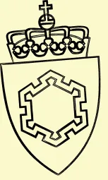
Bakgrunn
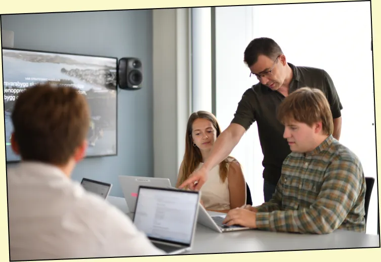
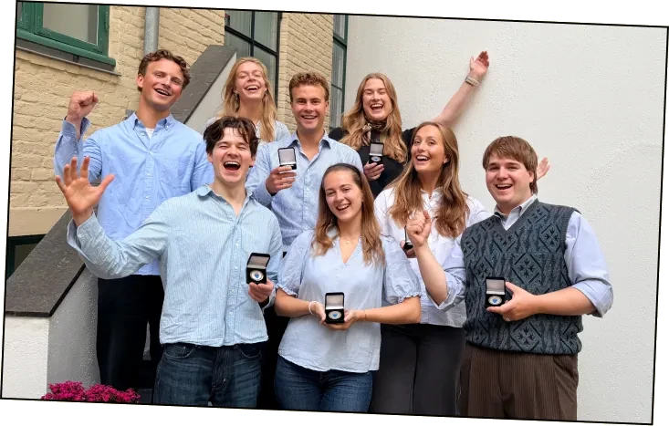
Utfordring:
Prosjektledere i Forsvarsbygg navigerer daglig mellom fem+ systemer uten integrasjon mellom dem. Kartlegging gjennom ~20 intervjuer viste at problemet ikke var mangel på informasjon, men at den var spredt, umerket og krevde stadig manuell sammenstilling.
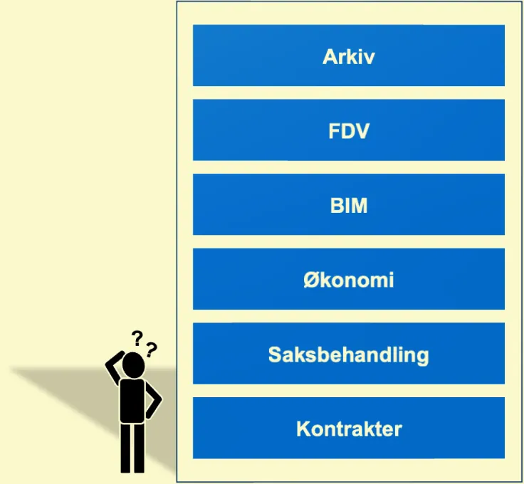
Prosess:
Semistrukturerte gruppeintervjuer med prosjektledere, byggeledere og entreprenører, kombinert med befaringer og dokumentstudier, dannet grunnlaget for brukerhistorier (f.eks. «Som prosjektleder ønsker jeg å se alle oppgaver, varsler og hendelser samlet i ett dashbord»). Design ble forankret i Nielsens brukbarhetsheuristikker og Normans brukersentrerte designprinsipper, med heuristisk evaluering som metode for kvalitetssikring der brukertesting var begrenset av sesong.
Løsning:
En Figma-prototype av et rollebasert dashbord integrert i Omega 365 med snarveier, samlet saksoversikt, KPI-visualisering og en arkiverbar chat-funksjon. Målet var ikke nye datakilder, men å gjøre eksisterende informasjon synlig for riktig rolle til riktig tid.
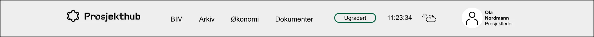
- Banner
Øverst finner du fire snarveisknapper; BIM, Arkiv, Økonomi og Dokumenter som tar deg direkte til de tilhørende systemene. En hjemknapp sørger for at du alltid finner tilbake til dashbordet. Her vises også graderingsnivå, vær på byggeplassens lokasjon, og hvilken bruker som er innlogget. Er du tilknyttet flere prosjekter, bytter du mellom dem via brukerprofilen øverst til høyre.
- Snarveier
En rad med selvvalgte mappesnarveier (f.eks. Prosjektplan, SHA-plan, Risikoanalyser). Klikk stjerneikonet for å tilpasse hvilke mapper som vises. Dette er yttig når prosjektet går inn i en ny fase.
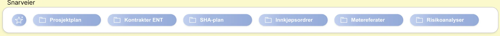
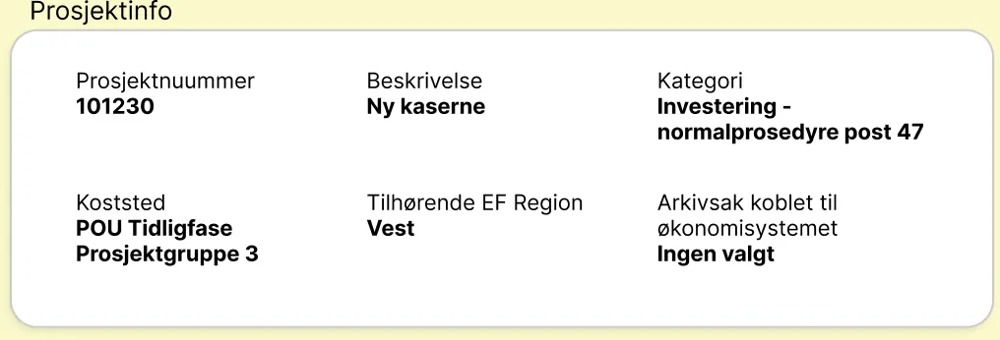
- Prosjektinfo
Viser prosjektnummer, kategori, kostsjef og EF-region på ett blikk, slik at du raskt kan bekrefte hvilket prosjekt du jobber i.
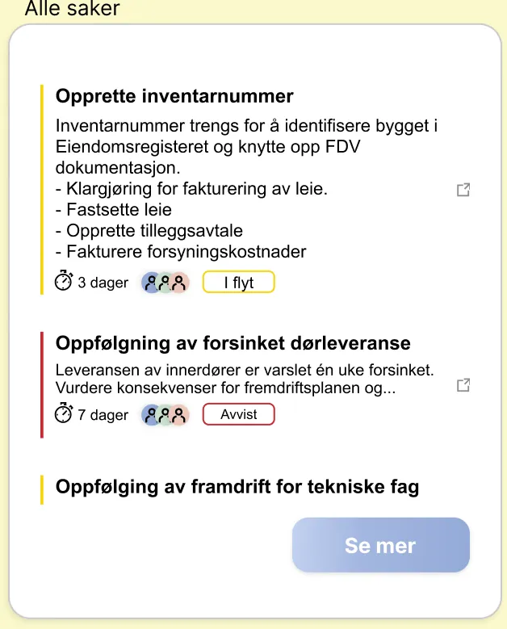
- Alle saker
Et trafikklyssystem (rødt/gult/grønt) gir rask oversikt over sakenes status. Klikk «Se mer» for full oversikt med filtrering på fagområde, ansvarlig og dato.
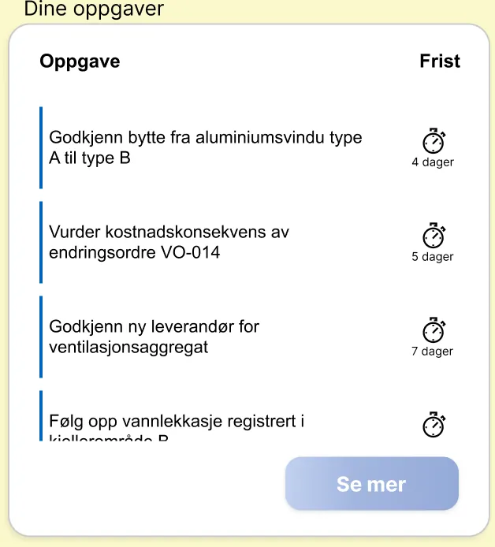
- Dine oppgaver
Personlig oppgaveliste sortert etter frist. Marker oppgaver som fullført, eller opprett nye både til deg selv og andre.
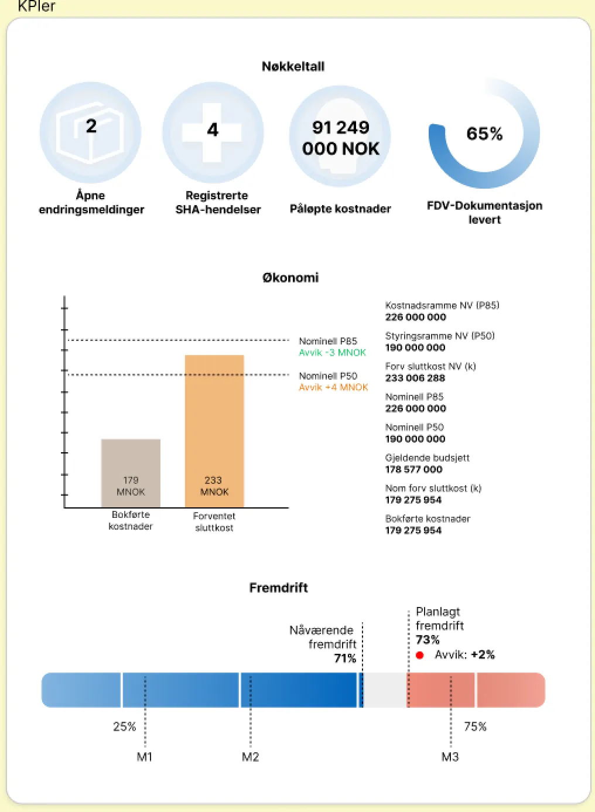
- KPIer
Nøkkeltall (åpne endringsmeldinger, SHA-hendelser, påløpte kostnader, FDV-dokumentasjon) sammen med to prestasjonsmålinger (Økonomi og Fremdrift), visualisert mot milepæler (M1–M3).
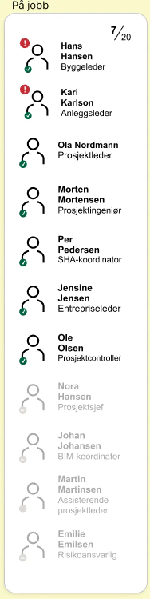
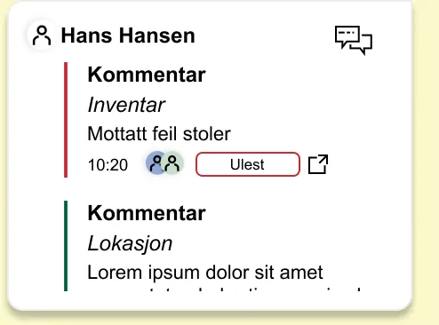
- På jobb
Viser hvem som er pålogget og deres rolle. En rød indikator varsler om ubehandlede endringsmeldinger tilknyttet brukeren; klikk for å åpne dialogen og gå videre til chatten.
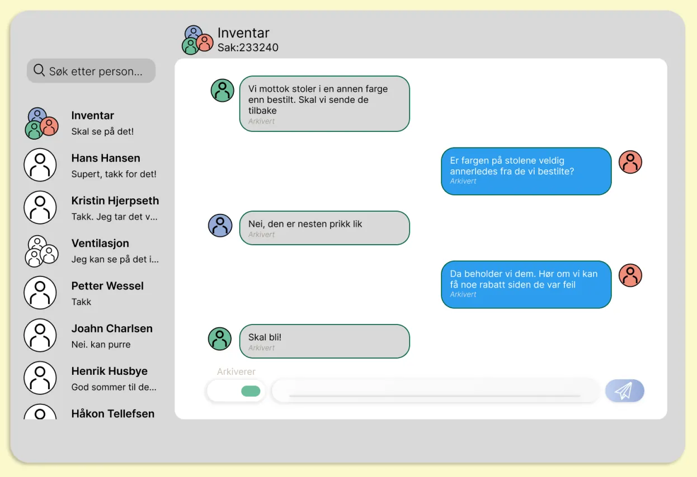
- Chat
Kommunikasjonskanal knyttet til enkeltsaker. Hele samtaler eller enkeltmeldinger kan arkiveres og kobles til riktig sak for sporbarhet.
Forventede gevinster:
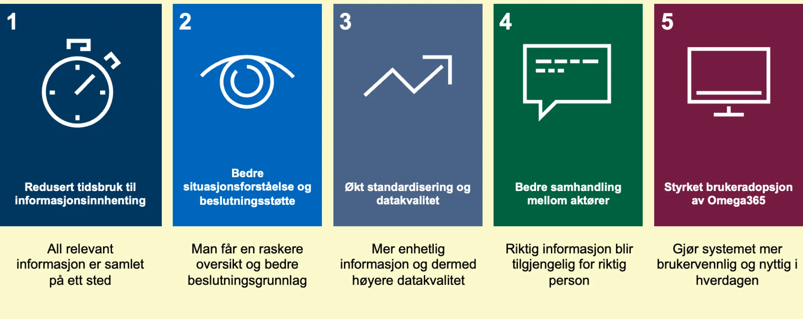
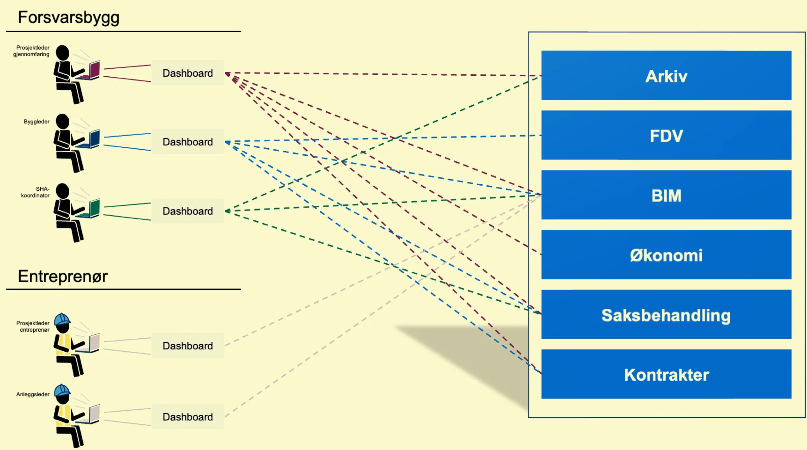
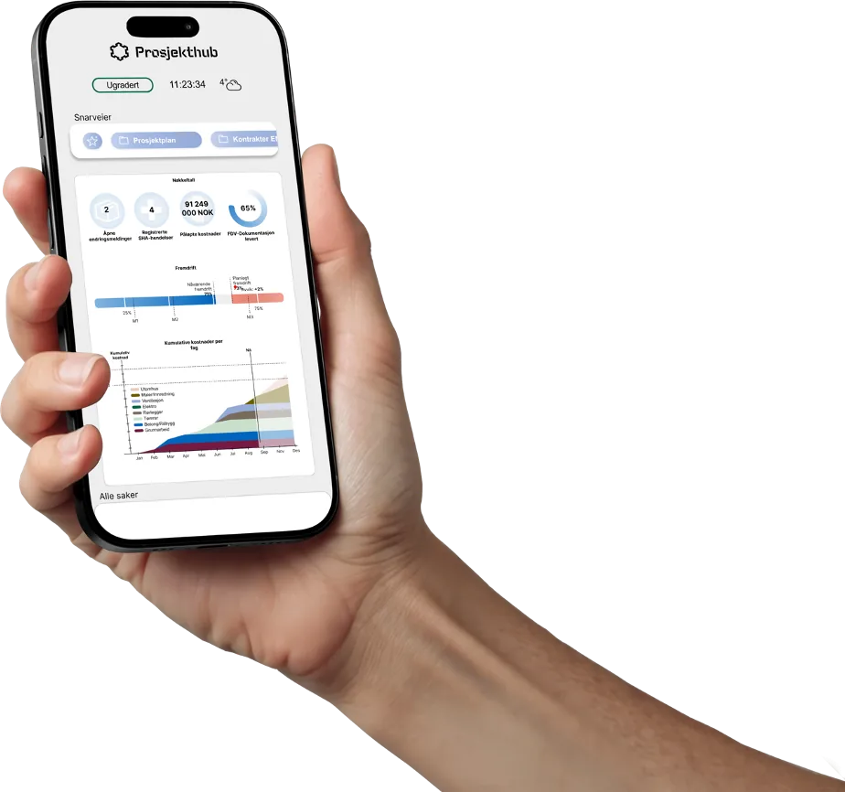
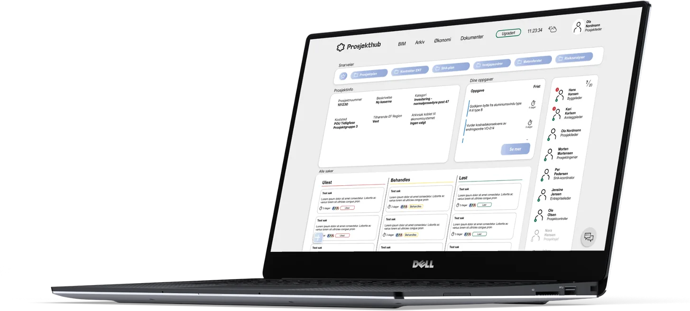